Rezepte für Grafik-Diners
Die interessantesten Grafik-Befehle verschweigt Ihnen Ihr Handbuch! Wollen Sie Ihren Computer wirklich kennenlernen? Wollen Sie wissen, wie man seine Fähigkeiten vollständig ausreizt, um die berühmte Grafik-Vielfalt des C 64 auf den Schirm zu kriegen? Dann lesen Sie!
Es geht wohl fast jedem Einsteiger so: Ein Grund für den Erwerb des C 64 waren die Angaben über die guten Grafik-Eigenschaften dieses Computers. Sind dann die ersten Hürden des Handbuches genommen, entsteht der Wunsch, nun auch mal in schönen Bildern oder exakten Graphen zu schwelgen. Und dann folgt die Enttäuschung: Das Handbuch schweigt sich weitgehend aus, das Basic 2.0 enthält keinerlei Grafik-Befehle! Sie haben nun drei Möglichkeiten, mit dieser Erkenntnis umzugehen: Lassen Sie die Grafik Grafik sein (würde ich nicht empfehlen), kaufen Sie sich eine der vielen auf dem Markt angebotenen Basic-Erweiterungen zur Grafik-Unterstützung (dann haben Sie eine Reihe von neuen Basic-Befehlen zur Verfügung, mit denen Sie beispielsweise zeichnen oder malen können, sind aber andererseits oft eingeschränkt: Ihr Computer kann meistens noch viel mehr!) oder Weg drei: Fassen Sie sich ein Herz und steigen Sie unerschrocken in die Labyrinthe der Ebenen unter der Hochsprache Basic. Das kann ein richtiges Abenteuer werden, die Register des Videochip und anderer Bausteine kennenzulernen und die weiten Ebenen des RAM zu durchstreifen, ungewöhnlichen Zahlen zu begegnen und anderes mehr. Sie brauchen diese Kreuzzüge nicht alleine durchzuführen. Tatkräftige Helfer stehen Ihnen in Form von Literatur zur Seite. Der vorliegende Artikel soll Ihnen in einem Schnellverfahren einfache Rezepte vorstellen, mit deren Hilfe Sie grafische Aufgabenstellungen lösen können. Falls Ihnen dann aber der Sinn nach mehr steht, bedienen Sie sich einiger der nachfolgend vorgestellten literarischen Mitstreiter:
1) H. Ponnath, »C 64-Wunderland der Grafik«, München 1985: Markt&Technik Verlag, MT 756 (Umfassende Einführung inklusive Diskette mit allen Beispielen, unter anderem auch mit einer Befehlserweiterung für Grafik-Programmierung).
2) S. Krute, »Grafik & Musik auf dem C 64«, München 1984: Markt&Technik Verlag, MT 743 (Legt Schwergewicht auf die Sprites und Musik).
Prinzip der Grafikprogrammierung
Bevor wir ans Kochen der verschiedenen Grafik-Gerichte gehen, sollten Sie noch etwas über das Handwerkszeug und die Küche erfahren. Wir sind gezwungen, unterhalb der Ebene der Hochsprache Basic zu operieren. Dafür wäre die geeignete Computersprache eigentlich Assembler. Viele Grafik-Programme bedienen sich daher auch dieser Sprache, was aber für Sie als Einsteiger den Nachteil mit sich brächte, daß Sie zuerst noch Assembler lernen müßten, um zu verstehen, was hier geschieht. Es gibt aber einige Basic-Befehle, die gewissermaßen zwischen den Ebenen verkehren. Dazu gehören vor allem POKE und PEEK. Mittels POKE kann man einen Wert direkt in eine Speicherstelle eintragen, mittels PEEK kann andererseits festgestellt werden, welcher Wert in einer Speicherstelle enthalten ist. Genau das erfordert die Grafik-Programmierung. Bestimmte Werte müssen in Register oder spezielle Speicherbereiche geschrieben oder aus diesen gelesen werden. Wir werden also Basic-Programme mit allerlei solchen POKE- und PEEK-Kommandos verwenden. Was sind Register? Grafikprogrammierung beim C 64 ist eigentlich in der Hauptsache die Programmierung eines besonderen Bausteines unseres Computers, nämlich des VIC-II-Chip. VIC ist die Abkürzung von »Video-Interface-Controller«, was bedeutet, daß es sich hierbei um den Baustein handelt, der die Kooperation des Computers mit dem Bildschirm kontrolliert. Die Programmierung eines solchen Chips geschieht fast ausschließlich durch bestimmte Speicherstellen (für den VIC sind das die zwischen 53248 und 53294), die man eben Register nennt. Je nach Inhalt dieser Register nimmt der VIC unterschiedliche Betriebszustände an, und weil mit diesen Registern die Grafikprogrammierung steht oder fällt, finden Sie sie in der Tabelle 1 alle aufgeführt.
| Register | Adresse | Bit 7 | Bit 6 | Bit 5 | Bit 4 | Bit 3 | Bit 2 | Bit 1 | Bit 0 |
|---|---|---|---|---|---|---|---|---|---|
| 0 | 53248 | X-Position des Sprite Nr. 0. Dazu muß Register 16 beachtet werden | |||||||
| 1 | 53249 | Y-Position des Sprite Nr. 0 | |||||||
| 2 | 53250 | X-Position des Sprite Nr. 1. Auch dazu, wie zu allen folgenden Sprites, muß Register 16 beachtet werden. | |||||||
| 3 | 53251 | Y-Position des Sprite Nr. 1 | |||||||
| 4 | 53252 | X-Position des Sprite Nr. 2. s. o. | |||||||
| 5 | 53253 | Y-Position des Sprite Nr. 2 | |||||||
| 6 | 53254 | X-Position des Sprite Nr. 3. s. o. | |||||||
| 7 | 53255 | Y-Position des Sprite Nr. 3 | |||||||
| 8 | 53256 | X-Position des Sprite Nr. 4. s. o. | |||||||
| 9 | 53257 | Y-Position des Sprite Nr. 4 | |||||||
| 10 | 53258 | X-Position des Sprite Nr. 5. s. o. | |||||||
| 11 | 53259 | Y-Position des Sprite Nr. 5 | |||||||
| 12 | 53260 | X-Position des Sprite Nr. 6. s. o. | |||||||
| 13 | 53261 | Y-Position des Sprite Nr. 6 | |||||||
| 14 | 53262 | X-Position des Sprite Nr. 7. s. o. | |||||||
| 15 | 53263 | Y-Position des Sprite Nr. 7 | |||||||
| 16 | 53264 | Spr. 7, msb X-Pos. | Spr. 6, msb X-Pos. | Spr. 5, msb X-Pos. | Spr. 4, msb X-Pos. | Spr. 3, msb X-Pos. | Spr. 2, msb X-Pos. | Spr. 1, msb X-Pos. | Spr. 0, msb X-Pos. |
| 17 | 53265 | msb des Rasterregisters (Reg. 18) | Schaltbit für veränderten Hintergrundfarbmodus 1 = eingeschaltet |
Schaltbit für Hochauflösungsmodus 1 = eingeschaltet |
Schaltbit für Bildschirm »aus« 0 = normaler Bildschirm 1 = Bildschirmfarbe gleich Hintergrundfarbe |
Schaltbit für Zeilenzahl 0 = 24 Zeilen 1 = 25 Zeilen |
Wert der Zeilenverschiebung in Y-Richtung beim Smooth Scrolling | ||
| 18 | 53266 | Rasterregister. Dazu kommt das msb in Bit 7, Register 17 | |||||||
| 19 | 53267 | Lichtgriffel X-Position | |||||||
| 20 | 53268 | Lichtgriffel Y-Position | |||||||
| 21 | 53269 | Ein- und Ausschalten von Sprites. 0 = Sprite aus. 1 = Sprite an | |||||||
| Sprite 7 | Sprite 6 | Sprite 5 | Sprite 4 | Sprite 3 | Sprite 2 | Sprite 1 | Sprite 0 | ||
| 22 | 53270 | Reset-Bit, muß 0 sein, damit VIC-II-Chip arbeitet | Schaltbit für Mehrfarbmodus 1 = eingeschaltet |
Schaltbit für Spaltenzahl 0=38 Spalten 1=40 Spalten |
Wert der Spaltenverschiebung in X-Richtung beim Smooth Scrolling | ||||
| 23 | 53271 | Sprite-Vergrößerung in Y-Richtung. 0 = normale Größe. 1 = doppelte Größe. | |||||||
| Sprite 7 | Sprite 6 | Sprite 5 | Sprite 4 | Sprite 3 | Sprite 2 | Sprite 1 | Sprite 0 | ||
| 24 | 53272 | Startadresse des Bildschirmspeichers | — Startadresse des Speicherbereichs, in dem die Zeichen als Punktmatrizen abzurufen sind. — Startadresse der Bit-Map |
||||||
| 25 | 53273 | Interrupt-Flaggen-Register Interrupt |
Lichtgriffel-Interrupt-Flagge | Sprite/Sprite-Kollision | Sprite/Hintergrund-Kollision | Raster-Interrupt-Flagge | |||
| 26 | 53274 | Interrupt-Masken-Register Interrupt |
Lichtgriffel-Interrupt-Maske | Sprite/Sprite-Koll.-Maske | Sprite/Hintergrund-Kollision Maske | Raster-Interrupt-Maske | |||
| 27 | 53275 | Sprite/Hintergrund-Prioritätenregister. 0 = Sprite hat Priorität. 1 = Hintergrund hat Priorität | |||||||
| Sprite 7 | Sprite 6 | Sprite 5 | Sprite 4 | Sprite 3 | Sprite 2 | Sprite 1 | Sprite 0 | ||
| 28 | 53276 | Sprite-Mehrfarbmodus-Register. 0 = Normaldarstellung. 1 = Mehrfarbmodus-Darstellung | |||||||
| Sprite 7 | Sprite 6 | Sprite 5 | Sprite 4 | Sprite 3 | Sprite 2 | Sprite 1 | Sprite 0 | ||
| 29 | 53277 | Sprite-Vergrößerung in X-Richtung. 0 = normale Größe. 1 = doppelte Größe | |||||||
| Sprite 7 | Sprite 6 | Sprite 5 | Sprite 4 | Sprite 3 | Sprite 2 | Sprite 1 | Sprite 0 | ||
| 30 | 53278 | Sprite/Sprite-Kollision. 0 = keine Berührung. 1 = Berührung | |||||||
| Sprite 7 | Sprite 6 | Sprite 5 | Sprite 4 | Sprite 3 | Sprite 2 | Sprite 1 | Sprite 0 | ||
| 31 | 53279 | Sprite/Hintergrund-Kollision. 0 = keine Berührung. 1 = Berührung | |||||||
| Sprite 7 | Sprite 6 | Sprite 5 | Sprite 4 | Sprite 3 | Sprite 2 | Sprite 1 | Sprite 0 | ||
| 32 | 53280 | unbenutzt | Farbe des Bildschirmrahmens | ||||||
| 33 | 53281 | unbenutzt | Hintergrundfarbe Nr. 0 (normale Hintergrundfarbe) | ||||||
| 34 | 53282 | unbenutzt | Hintergrundfarbe Nr. 1 | ||||||
| 35 | 53283 | unbenutzt | Hintergrundfarbe Nr. 2 | ||||||
| 36 | 53284 | unbenutzt | Hintergrundfarbe Nr. 3 | ||||||
| 37 | 53285 | unbenutzt | Sprite-Mehrfarben-Register Nr. 0 | ||||||
| 38 | 53286 | unbenutzt | Sprite-Mehrfarben-Register Nr. 1 | ||||||
| 39 | 53287 | unbenutzt | Sprite 0, Farbe | ||||||
| 40 | 53288 | unbenutzt | Sprite 1, Farbe | ||||||
| 41 | 53289 | unbenutzt | Sprite 2, Farbe | ||||||
| 42 | 53290 | unbenutzt | Sprite 3, Farbe | ||||||
| 43 | 53291 | unbenutzt | Sprite 4, Farbe | ||||||
| 44 | 53292 | unbenutzt | Sprite 5, Farbe | ||||||
| 45 | 53293 | unbenutzt | Sprite 6, Farbe | ||||||
| 46 | 53294 | unbenutzt | Sprite 7, Farbe | ||||||
Die Möglichkeiten, die uns der VIC-II-Chip grafisch eröffnet, sind immens. Sechs davon werden Ihnen nachfolgend als Kochrezepte vorgestellt:
Blockgrafik
Zeichensatzänderungen
mehrfarbige Zeichen
Sprites
hochauflösende Grafik
Mehrfarbengrafik
So! Nun wollen wir die Töpfe, Pfannen und Kochlöffel schwingen zum ersten grafischen Gericht:
Blockgrafik
Unter Blockgrafik versteht man die Art Grafik, die mit den Zeichen realisiert wird, die unsere Tastatur hergibt. Reine Grafikzeichen findet man hier zwischen CHR$(96) und CHR$(127) sowie von CHR$(161) bis CHR$(254). Abgesehen von den Spielkartenzeichen CHR$(97), CHR$(115), CHR$(120) und CHR$(122) oder Bällen CHR$(113), CHR$(119) oder einfach durch eine Reihe von PRINT-Befehlen aufgebaute Abbildungen können durchaus auch ernsthafte und nützliche Dinge mit Blockgrafik betrieben werden. Beispielsweise gibt es vereinzelt in Fachzeitschriften Programme zu Kurvendiskussionen, die einen Kurvenverlauf mittels der sogenannten Viertelblockgrafik zeichnen (dazu gehören beispielsweise die Zeichen CHR$(187) und andere). Manchmal hört man hier auch den Begriff »Grafik mittlerer Auflösung«, weil man bei geschickter Programmierung aus den 40 horizontalen Positionen 80 und aus den 25 vertikalen 50 hervorzaubern kann. Aber auch mit der niedrigen Auflösung von 40 mal 25 Bildschirmpositionen lassen sich sinnvolle Anwendungen realisieren. Wir wollen hier ein Programm zur Erstellung von Säulendiagrammen entwickeln, das bis zu 12 Werte in horizontalen Säulen übersichtlich abbildet (Listing 1). Hier ein Kommentar zu den Programminhalten:
| 20 | Rahmenfarbe schwarz, Hintergrund grau. |
| 30 | Zeichenfarbe grün, Bildschirm löschen. |
| 40 | Liste aller Variablen |
| 50 | Erzeugung zweier Strings für einen Vertikaltabulator. DN$ = 24mal Cursor down UP$ = 24mal Cursor up. |
| 65 | Hier gibt es die Möglichkeit, entweder einen eingebauten Test oder aber eigene Daten abbilden zu lassen. Wenn Sie später den Test nicht mehr benötigen, löschen Sie einfach die Zeilen 65, 67 und 400 bis 460. |
| 70 | Abfrage auf die Anzahl der Werte. Zulässig ist hier eins bis zehn. |
| 80 | Falls die Anzahl außerhalb des erlaubten Bereiches liegt, wird erneut abgefragt. |
| 90 | Zwei Felder werden dimensioniert. W(N) enthält die Werte, W$(N) eine Kenn-Bezeichnung für diese Werte. |
| 100 | Eine Kopfzeile für die Eingabe der Werte wird gedruckt. |
| 110 | Eingabeschleife. |
| 120 | Abfrage der Kenn-Bezeichnung. Nur die beiden ersten Zeichen werden gespeichert. |
| 130 | Abfrage des Wertes. |
| 140 | Jeder Wert wird verglichen mit einem Maximalwert MA. Ist der aktuelle Wert größer als MA, dann wird er zu MA. Am Ende der Eingabeschleife befindet sich der größte Wert in MA. |
| 150 | Ende der Eingabeschleife. |
| 160 | Hier muß eine Kopfzeile, ein Titel des Diagrammes, eingegeben werden. |
| 170 | Falls diese Kopfzeile kürzer als 40 Zeichen ist, wird ihr noch ein Cursor down angehängt. |
| 190 | 30 horizontale Positionen werden für den Maximalwert reserviert. Jede Position entspricht nun einem Differenzwert DX. Die 22 freien Vertikalen (25-2 für den Kopf und -1 für die letzte Zeile) werden auf die Anzahl der Werte aufgeteilt. |
| 210 | Bildschirm rollt hinauf, Cursor in Home-Position, Hintergrund schwarz. |
| 220-240 | Eine vertikale Linie erscheint als Grundlinie auf dem Bildschirm. |
| 250 | Cursor in Home-Position, Drucken des Titels. |
| 260 | Die Zeichenschleife beginnt hier. |
| 265 | Der vertikale Tabulator setzt den Cursor entsprechend der Werteanzahl abwärts. |
| 270 | Drucken der Kennbezeichnung, Reversmodus einschalten, Zeichenfarbe rot, Linie überspringen. |
| 280-300 | Aus reversen Spacezeichen wird in dieser Schleife ein waagerechter Balken gezeichnet. Seine Länge hängt ab vom Verhältnis des aktuellen Wertes zum Differenzwert DX. |
| 310 | Reversmodus ausschalten, Zeichenfarbe grün und Drucken des Wertes ab Position 33. Zu beachten ist, daß der Wert nicht mehr als sechs Ziffern (inklusive Dezimalpunkt) enthält, weil sonst in der nächsten Zeile weitergeschrieben wird. Hier könnte das Programm noch eine Veränderung ertragen. Probieren Sie es doch mal aus! |
| 330 | Ende der Zeichenschleife. |
| 340 | Das Bild bleibt bis zu einem Tastendruck eingefroren. |
| 400- | Das ist der Eingabeteil für den Fall, daß Sie den Testlauf wählen. Wie Sie – beispielsweise aus dem Kommentar zu Zeile 310 – feststellen können, ist dieses Programm durchaus noch erweiterungsfähig. Zum einen ist es nämlich nicht ganz wasserdicht: Man kann durch bestimmte Eingaben eine Fehlermeldung und den Programmabschluß erzwingen. Das darf bei professioneller Software natürlich nicht passieren. Zum anderen aber könnte man die – jetzt sehr grobe – Darstellung verfeinern, indem man außer den reversen Spaces auch noch andere Zeichen (beispielsweise CHR$(161)) einplant. Daran können Sie sich ja mal erproben. Dieses Rezept verhilft uns zunächst lediglich zu einer leichten Vorspeise. Ein weiteres Gericht hat ebenfalls mit den Zeichen zu tun. |
Zeichenmusteränderung
Der Computer hat für jedes Zeichen, das er auf dem Bildschirm zeigen kann, acht Speicherstellen, in denen er sich merkt, wie das Zeichen aussehen soll. All diese Zeichenmuster bewahrt er im sogenannten Zeichen-ROM auf. Beispielsweise ist dort das Zeichen A so gespeichert, wie es Bild 1 zeigt:
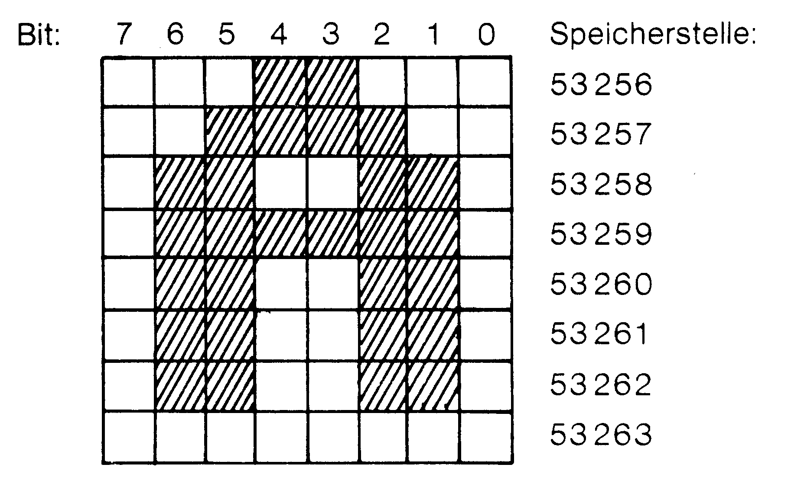
Bevor wir weitermachen, müssen noch ein paar Begriffe erklärt werden:
| ROM | Speicher, aus dem nur gelesen werden kann. |
| RAM | Speicher, der Schreiben und Lesen erlaubt. |
| Bit | Das ist die kleinste Informationseinheit. Ein Bit kann entweder 1 oder 0 enthalten. Man kann sich das vorstellen wie eine Lampe, die entweder angeschaltet (also 1) oder ausgeschaltet (also 0) sein kann. |
| Byte | Acht Bits werden zusammengefaßt und bekommen den Namen Byte. In unserem Computer paßt in jede Speicherstelle genau ein Byte. |
| Page | 256 solcher Bytes nennt man eine Page. Vier Pages nennt man 1 KByte. Das sind dann genau 1024 Bytes. Vorsicht: 1 KByte darf nicht verwechselt werden mit 1 kByte, denn das letztere wird ein Kilobyte genannt und entspricht genau 1000 Bytes! |
In Bild 1 sehen Sie die acht Bytes, die in den Speicherstellen 53256 bis 53263 des Zeichen-ROM den Buchstaben A als Muster enthalten. Jedes Kreuz entspricht einem gesetzten Bit (also einem Bit mit dem Inhalt 1), die anderen enthalten 0. Das Betriebssystem liest in dem Moment, wo ein A auf dem Bildschirm erscheinen soll, dieses Zeichenmuster und legt es in den Bildschirmspeicher. Der Bildschirm ist nämlich ein RAM-Bereich und dort hinein kann ja geschrieben werden. Überall dort, wo nun ein gesetztes Bit im Bildschirmspeicher zu finden ist, leuchtet ein Bildpunkt auf. An allen anderen Stellen bleibt die Hintergrundfarbe erhalten. In welcher Farbe der Bildpunkt aufleuchten soll, erkennt unser Computer an einem weiteren RAM-Bereich, der genauso angeordnet ist wie der Bildschirm, nämlich dem Bildschirmfarbspeicher. Im Handbuch sind beide Speicherbereiche beschrieben und abgebildet. Nun wissen wir also, wie die normalen Zeichenmuster vom Computer benutzt werden. Weil diese sich im ROM befinden, kann man sie nicht verändern, denn dazu müßte man dort ja andere Muster hineinschreiben. Schreiben kann man aber nur in RAM-Bereiche. Deshalb kopiert man nun einfach den Inhalt des Zeichen-ROM in einen RAM-Bereich. Der VIC-II-Chip bietet außerdem die Möglichkeit, anzugeben, woher die Zeichenmuster geholt werden sollen. Damit steht uns im Prinzip der Weg zum Verändern der Muster offen. Wie findet nun das eigentliche Verändern statt? Dazu muß man wissen, daß jedem Byte eines solchen Zeichenmusters eine Zahl zugeordnet werden kann. Die berechnet man so, daß man jedem gesetzten Bit je nach seiner Bitnummer einen bestimmten Wert zuordnet. All diese Werte zählt man schließlich zusammen. Welche Werte zu welcher Bitnummer gehören, zeigt Ihnen Bild 2:
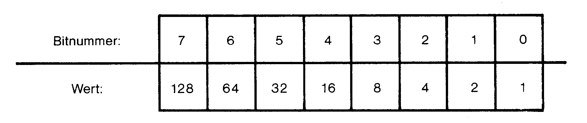
Ein Beispiel sehen Sie in Bild 3. Wie Sie beim Vergleichen mit Bild 1 erkennen werden, handelt es sich um den Inhalt der Speicherstelle 53256, das erste Byte des Zeichenmusters von A also. Eine Veränderung erreicht man nun durch Einschreiben eines anderen Wertes.
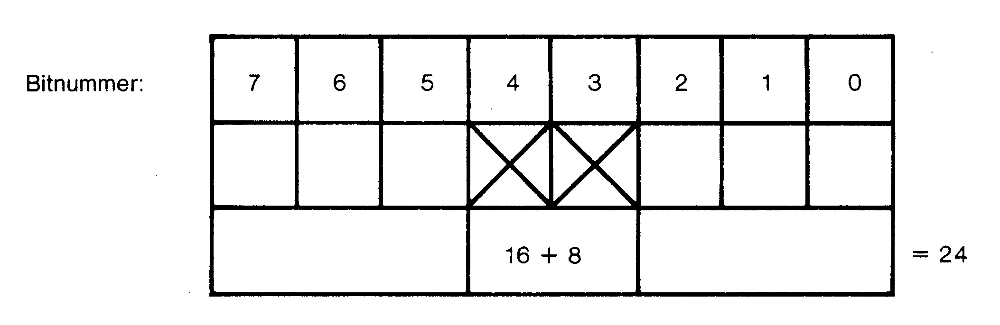
Wir werden nun Schritt für Schritt ein Rezept entwickeln, mit dem wir einem Zeichen, beispielsweise dem Buchstaben A, ein völlig neues Aussehen verleihen können. Das so entwickelte Programm ist natürlich jederzeit ausbaufähig für weitere Zeichenmusteränderungen.
Schritt 1: Wir packen den Inhalt des Zeichen-ROM ins RAM ab Speicherstelle 12288. Dies ist normalerweise ein Bereich, in dem lange Basic-Programme oder deren Variable, Felder oder Strings auftauchen können. Dadurch aber würde unser Zeichensatz überschrieben werden. Es gibt die Möglichkeit, den Basic-Speicher so einzuschränken, daß er nur noch bis 12287 reicht. Das machen wir mit:
40 POKE 52,48:POKE 56,48Schritt 2: Unser C 64 enthält ein ständig nebenher laufendes – von uns nicht bemerktes – Maschinenprogramm, das den normalen Betrieb möglich macht. Beispielsweise steuert dieses Programm das Blinken des Cursors, es sorgt für das Weiterlaufen der internen Uhr (TI$) und schaltet blitzschnell verschiedene ROM-Bausteine – auch das Zeichen-ROM – an oder aus. Wenn wir den Inhalt des Zeichen-ROM kopieren wollen, dürfen wir natürlich währendessen nicht unterbrochen werden. Es gibt eine Speicherstelle im sogenannten CIA 1, mit deren Inhalt man solche Unterbrechungen aus- und einschalten kann. Wir schalten diesen Störenfried ab:
60 POKE 56334,PEEK(56334) AND 254Nebenbei bemerkt: Sie werden sich natürlich fragen, wie es denn zu all diesen Zahlenangaben kommt und was beispielsweise die Operation AND an dieser Stelle bedeutet. Im Verlauf dieses Artikels werden sich diese und weitere Fragen noch häufen. Wenn Sie – wie in diesem Schnellkurs vorgesehen – nicht nur nachkochen möchten, sondern auch verstehen, was hier geschieht, dann verweise ich Sie nochmal auf die eingangs genannte Literatur. Unser Artikel würde mit allen zu erklärenden Grundlagen über 100 Seiten Umfang annehmen.
Schritt 3: Weil wir nach dem Abschalten der Unterbrechung gar nicht wissen, ob das Zeichen-ROM gerade eingeschaltet war oder nicht, schalten wir es sicherheitshalber einfach ein. Der sogenannte Prozessorport in Speicherstelle 1 dient solchen Zwecken:
80 POKE 1,PEEK(1) AND 251Schritt 4: Wir sind nun bereit zum Kopieren. Das Zeichen-ROM beginnt bei Adresse 53248. Wir kopieren 4096 Byte, was 512 Zeichenmustern entspricht. Die Tabelle 2 zeigt Ihnen die Anordnung der verschiedenen Zeichenmuster im ROM:
| Block | Adressenbereich | Zeichen | Muster abrufbar im Programm mit Code |
|---|---|---|---|
| 0 | 53248-53759 | Satz 1 von 0 bis 63 (0 bis ?) | 0-63 |
| 53760-54271 | Satz 1 von 64 bis 127 (Grafikz.) | 64-127 | |
| 54272-54783 | Satz 1 von 0 bis 63 (Reversed) | 128-191 | |
| 54784-55295 | Satz 1 von 64 bis 127 (Reversed) | 192-255 | |
| 1 | 55296-55807 | Satz 2 von 0 bis 63 (kleine Buchst.) | 256-319 |
| 55808-56319 | Satz 2 von 64 bis 127 (Großbuchst.+Grafikz.) | 320-383 | |
| 56320-56831 | Satz 2 von 0 bis 63 (Reversed) | 384-447 | |
| 56832-57343 | Satz 2 von 64 bis 127 (Reversed) | 448-511 |
Als Zieladresse haben wir in Schritt 1 uns auf 12288 festgelegt. Eigentlich bräuchten wir nun nur zu programmieren:
Zeilennummer FOR I=0 TO 4095:POKE 12288+I,PEEK(53248+I):NEXTWenn wir nachher das gesamte Programm vorliegen haben, können Sie ja mal spaßeshalber anstelle der Zeilen 90 bis 180 diese Programmzeile verwenden. Es funktioniert! Aber das Kopieren damit dauert so lange, daß man in der Zwischenzeit gemütlich eine Tasse Tee trinken kann. Dasselbe – nur erheblich schneller – leistet ein Maschinenprogramm, das die beiden folgenden Zeilen ab Speicherstelle 49152 erzeugt:
100 FOR I=49152 TO 49158:READ A:POKE I,A:NEXT I
110 DATA 133,95,134,96,76,191,163Bevor wir dann das Maschinenprogramm zum Kopieren aufrufen, müssen ihm noch die Adressen des Quell- und des Zielspeicherbereiches übergeben werden. Hier legen wir zunächst die Anfangs- und die Endadresse des Zeichen-ROM fest:
130 QS = 53248:QE = QS + 4096Des weiteren verlangt das verwendete Maschinenprogramm noch die Endadresse des Zielspeicherbereiches:
140 ZE = 12288 + 4096Die Adressenübergabe geschieht in einer bestimmten Form (im sogenannten LSB/MSB-Format) über festgelegte Speicherstellen:
150 A = INT(QS/256):POKE 781,A:POKE 780,QS-256*A
160 A = INT(QE/256):POKE 91,A:POKE 90,QE-256*A
170 A = INT(ZE/256):POKE 89,A:POKE 88,ZE-256*ANach all diesen Vorbereitungen rufen wir das Maschinenprogramm zum Kopieren nun auf:
180 SYS 49152Schritt 5: Nach all diesen Eingriffen stellen wir den Normalzustand unseres Computers wieder her. Das Zeichen-ROM wird zuerst wieder abgeschaltet:
200 POKE 1,PEEK(1) OR 4Dann erlauben wir wieder die Unterbrechungen:
210 POKE 56334,PEEK(56334) OR 1Schritt 6: Noch liest unser Computer alle seine Zeichenmuster aus dem Zeichen-ROM. Das soll nun anders werden! Eine Speicherstelle im VIC-II-Chip steuert den Zugriff auf die Zeichenmusterquellen. Dort verändern wir nun den Inhalt derart, daß künftig diese Muster aus unserer Kopie ab 12288 gelesen werden:
230 POKE 53272,(PEEK(53272) AND 240) OR 12Wenn Sie bis hierher das Programm abgetippt haben und es nun durch RUN starten, dann werden Sie überhaupt keinen Unterschied zum vorherigen Zustand feststellen. Das ist auch richtig so, denn wir haben ja noch kein Zeichen verändert. Das geschieht erst jetzt im nächsten Schritt.
Schritt 7: Wir legen zuerst einmal fest, welches Zeichen wir ändern möchten und bei welcher Speicherstelle sein Muster beginnt. Den Buchstaben A haben wir uns ausgesucht, zu dem der POKE-Code 1 gehört (diese Codes finden Sie im Handbuch):
250 C = 1
260 S = 12288 + 8*CAls nächstes folgt eine kleine Schleife, die aus DATA-Zeilen die neuen Byte-Werte herausliest und sie dann in die zu A gehörigen Speicherstellen unseres Zeichen-RAM hineinschreibt:
270 FOR I=0 TO 7
280 :READ A:POKE S+I,A
290 NEXTSpätestens jetzt sollten wir uns überlegen, wie unser neues A aussehen soll. Das geschieht im nächsten Schritt.
Schritt 8: Wir zeichnen uns dazu ein 8 mal 8 Raster, in das wir das neue Muster eintragen. Jede horizontale Reihe entspricht einem Byte, dessen Wert wir nun auf die oben beschriebene Weise (siehe Bilder 2 und 3) berechnen. Ein Beispiel zeigt Ihnen Bild 4:
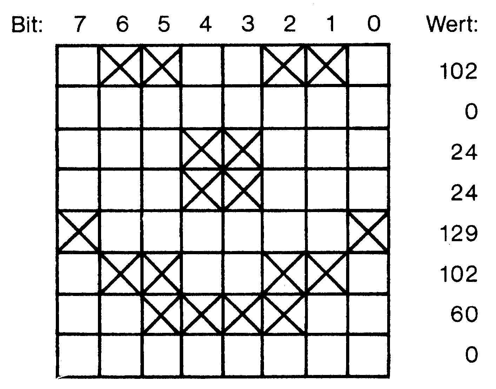
Diese 8 Werte legen wir in eine DATA-Zeile:
300 DATA 102,0,24,24,129,102,60,0Haben Sie alles abgetippt? Dann geben Sie nun einmal RUN ein und freuen sich über unser freundliches A. Als Programm »Abrakadabra« (Listing 2) finden Sie alles noch einmal zusammengefaßt und etwas ergänzt hier abgedruckt:
Die Ergänzungen bestehen aus der Zeile 30, in der der Bildschirm gelöscht und das Wort ABRAKADABRA gedruckt wird, sowie aus dem Schlußteil. Das Programm meldet sich nämlich bei Zeile 320 mit einer BREAK-Mitteilung. Sie können nun mit dem neuen Zeichen herumexperimentieren (beispielsweise das ganze Programm mal LISTen). Falls Sie dann irgendwann CONT eingeben, wird auch noch die Zeile 330 durchlaufen, in der zunächst der VIC-II-Chip wieder auf das Zeichen-ROM gerichtet und dann auch die Begrenzung des Speichers rückgängig gemacht wird. Dieses unser zweites Rezept führt zu einem recht vielseitig verwendbaren Gericht. Brauchen Sie für irgendwelche Zwecke mal griechische Buchstaben? Dann nehmen Sie doch einfach den Bereich für die Reverse-Zeichen und erstellen darin griechische Zeichenmuster. Durch Einschalten des Reverse-Modus schreiben Sie dann griechisch. Benötigen Sie spezielle Grafikzeichen, die nicht auf der Tastatur vorgegeben sind? Sie wissen nun, wie Sie sie erzeugen und benutzen können. Größere grafische Objekte setzen Sie sich einfach aus mehreren verschiedenen veränderten Zeichen zusammen. Durch eine Anzahl von PRINT-Befehlen können Sie sie dann jederzeit erzeugen. Bleiben wir noch ein wenig bei den Zeichen im nächsten Rezept.
Zeichen im Mehrfarbenmodus
Erinnern wir uns: Auf dem Bildschirm wird ein Zeichen so abgebildet, wie es im Zeichenmuster gespeichert wurde. Überall dort, wo ein gesetztes Bit vorhanden ist, leuchtet ein Bildpunkt auf. Die Farbe des Bildpunktes entspricht dem Farbcode, der in der zur Bildschirmspeicherstelle gehörigen Bildschirmfarbspeicherstelle enthalten ist. Bild 5 verdeutlicht die Zusammenhänge:
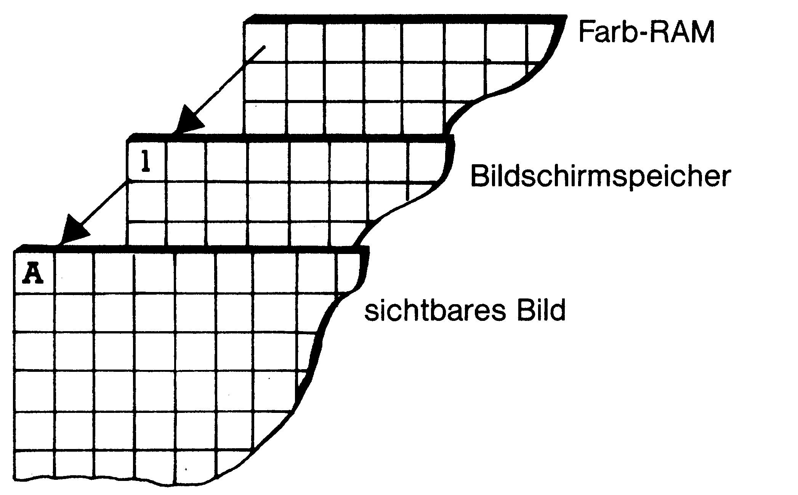
Die Farbe der Stellen, an denen kein gesetztes Bit vorliegt, stammt aus der Speicherstelle 53281. Das ist der Normalfall. Für Farbgourmets sehen wir uns nun ein Rezept an, das uns hilft, bunte Zeichen zu servieren. Es gibt nämlich einen Betriebszustand des VIC-II-Chip, in dem dieser die Zeichenmuster zur Farbgebung auf veränderte Weise liest. Hier entscheiden nicht mehr einzelne Bit-Inhalte, sondern immer Bit-Paare über die zu zeigende Farbe. Sehen wir uns das nochmal am Muster für den Buchstaben A an, das wir nun paarweise zusammenfassen (siehe Bild 6):
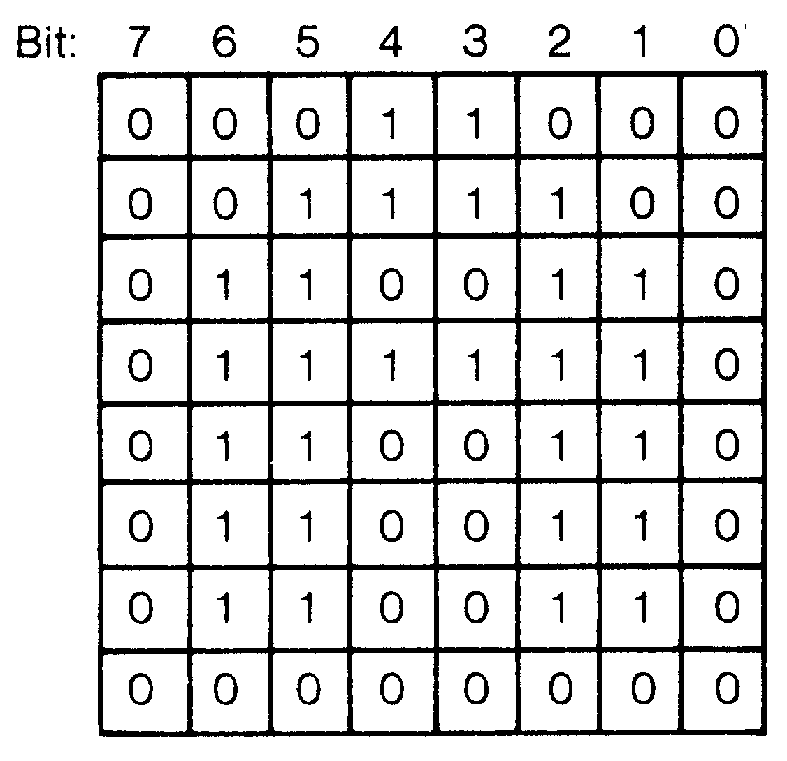
Es tauchen vier verschiedene Kombinationen auf: 00, 01, 10 und 11. Sie vermuten richtig, wenn Sie nun annehmen, daß wir vier verschiedene Farben in unseren Zeichen darstellen können. Die Kombination 00 entspricht dabei der 0 im normalen Modus: An dieser Stelle leuchtet kein Bildpunkt auf, die Farbe entstammt dem VIC-Register 53281 für die Hintergrundfarbe. An Stellen, an denen sich eine Kombination 01 befindet, leuchtet der Bildschirm auf. Als Farbinformation wird der Inhalt der Speicherstelle 53282 verwendet. Das ist ein VIC-Register, das Hintergrundfarbe 1 genannt wird. Auch an den Stellen mit der Kombination 10 leuchtet der Bildschirm auf. Die Farbinformation stammt hier aus dem VIC-Register 53283 (Hintergrundfarbe 2). Etwas komplizierter verhält sich das mit der Paarung 11. Hier wird jeweils die Farbe verwendet, die im dazugehörigen Bildschirmfarbspeicher (also in dem Speicher, der für die Farbe der Zeichen im Normalmodus eine Rolle spielt, ab 55296) angegeben ist. Allerdings findet hier nur ein Teil dieses Farbcodes Verwendung. Man kann zwar alle 16 möglichen Farbcodes (siehe Handbuch) eingeben, aber tatsächlich treten im Ergebnis nur die Codes 0 bis 7 auf: Die Codes werden als MODULO(8) gedeutet (MODULO(8) bedeutet, daß der Rest nach einer Division durch 8 verwendet wird). Auf diesen Code aber kommen wir gleich nochmal zurück. Bisher wissen Sie ja noch gar nicht, wie wir unseren Computer dazu bringen können, die Zeichenmuster auf diese extravagante Weise zu lesen. Des Rätsels Lösung liegt in einem VIC-II-Chip-Register, nämlich 53270. Man schaltet diesen Mehrfarbenmodus ein mittels:
POKE 53270,PEEK(53270) OR 16In den Normalmodus zurück gelangt man durch:
POKE 53270,PEEK(53270) AND 239Falls Sie das einfach mal ganz direkt ausprobieren, dann werden Sie feststellen, daß das Ergebnis (mehrfarbige Zeichen oder nicht) außer von diesem Register und natürlich dem Inhalt der beiden Speicherstellen 53282 und 53283 auch noch stark von der aktuellen Zeichenfarbe abhängt. Da haben wir nämlich die zweite Voraussetzung für die Erzeugung von Mehrfarbenzeichen: Die aktuelle Zeichenfarbe muß einen Code aufweisen, der größer als 7 ist. Ist der Code (steuerbar durch POKE 646,Farbcode) kleiner oder gleich 7, dann ändert sich zwar die Farbe gemäß dem eingegebenen Code, aber weit und breit ist nichts vom Mehrfarbenmodus zu sehen. Sobald wir aber auf einen Code ab 8 kommen, wird es bunt. Wie das aussieht, können Sie nachvollziehen durch das Programm »Bunte Zeichen« (Listing 3):
Nach dem RUN erscheint zunächst die Schrift im Normalmodus. Das ist der Fall, weil hier der Farbcode der Zeichen noch kleiner als 8 ist, nämlich 1. Danach sehen Sie die bunten Zeichen. Der Farbcode wird nämlich in Zeile 90 auf 10 eingestellt. Mit den Farben ist das übrigens immer ein kleines Glücksspiel: Nahezu jeder Monitor (vom Farbfernseher ganz zu schweigen) erzeugt andere Farben. Um die für Ihr Gerät günstigste Kombination auszuprobieren, sollten Sie einfach mal in den Zeilen 30 und 90 andere Farbcodes ausprobieren. So! Nach all diesen Vorspeisen kommen nun die Hauptgerichte. Als erstes ein Rezept für Sprites:
Sprites
Sprites sind ungewöhnliche grafische Objekte. Sie kümmern sich überhaupt nicht darum, ob unser VIC-II-Chip gerade den Textmodus oder einen grafischen Modus verwaltet. Wie seltsam das ist, werden Sie später bemerken, wenn wir feststellen, daß die gleichzeitige Darstellung von Text und Grafik (wenn es keine Grafik aus den Tastaturzeichen ist) nur schwer möglich ist. In Bild 7 finden Sie einen Plan der Kochvorschrift, mit deren Hilfe jedes Sprite programmiert werden kann.
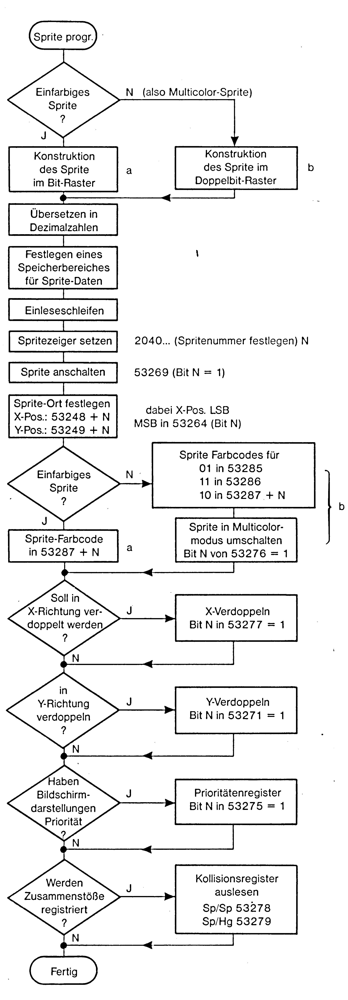
Diesem Schema werden wir nun Schritt für Schritt folgen bis zum fertigen Sprite-Programm. Der krönende Abschluß dieses Rezeptes wird dann ein kleines Programm sein, das Ihnen erklärt, weshalb der fliegende Holländer – der in früheren Jahrhunderten ständig die Weltmeere unsicher machte – seit vielen Jahrzehnten keine Schlagzeilen mehr in der Presse verursacht. Wo ist er geblieben? Dazu später.
Schritt 1: Grobplanung
Der erste Schritt erfordert etwas Planung: Wofür brauchen wir die Sprites? Ist es sinnvoll, einen einfarbigen – dafür aber feiner strukturierten – oder besser einen mehrfarbigen (drei Spritefarben + Hintergrundfarbe) zu benutzen, der allerdings dann weniger Details aufweist? Von dieser Entscheidung hängen einige weitere in späteren Schritten ab. Wir werden hier einfach zwei Sprites verwenden, von denen einer ein- und der andere mehrfarbig ist.
Schritt 2: Die kreative Phase
Wir spitzen den Bleistift und zeichnen uns auf kariertem Papier ein Rechteck mit 24 Kästchen waagerecht und 21 senkrecht. Das ist unser Sprite-Entwurfsblatt. Genau diese Ausdehnung – in Bildpunkten statt Kästchen – hat ein normales Sprite. Es folgt dann – hoffentlich – der beflügelnde Kuß der Musen. Hat Sie die Inspiration gepackt, dann kommt es darauf an, ob sie ein ein- oder ein mehrfarbiges Sprite kreieren.
a) Beim Einfarbigen plazieren Sie an jede Stelle, an der ein Bildpunkt leuchten soll, ein Kreuzchen: das sieht dann einem Stickmuster sehr ähnlich. Auf diese Weise ergibt sich auch unser erstes Sprite in Bild 8.
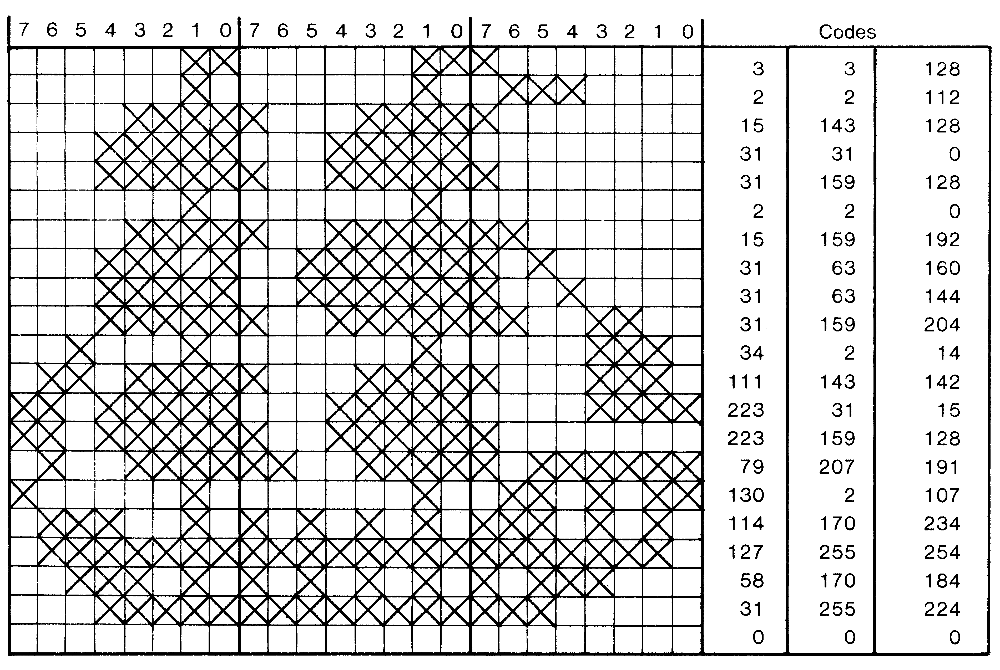
Etwas komplexer verhält sich das beim mehrfarbigen Sprite. Ähnlich wie bei den mehrfarbigen Zeichen, werden auch hier die Bits paarweise interpretiert. Dabei gibt es wieder vier verschiedene Kombinationsmöglichkeiten und daher auch vier Farben: 00 erzeugt die Hintergrundfarbe, 01, 10 und 11 führen jeweils zu verschiedenen Vordergrundfarben. Hier legt man sich am besten drei verschiedene Farbstifte bereit und füllt nun Bitpaar für Bitpaar mit der gewünschten Farbe aus. Zuvor ordnet man noch jeder Kombination eine Farbe zu. Unser Beispielssprite mit mehreren Farben ergibt sich auf diese Weise wie in Bild 9 gezeigt:
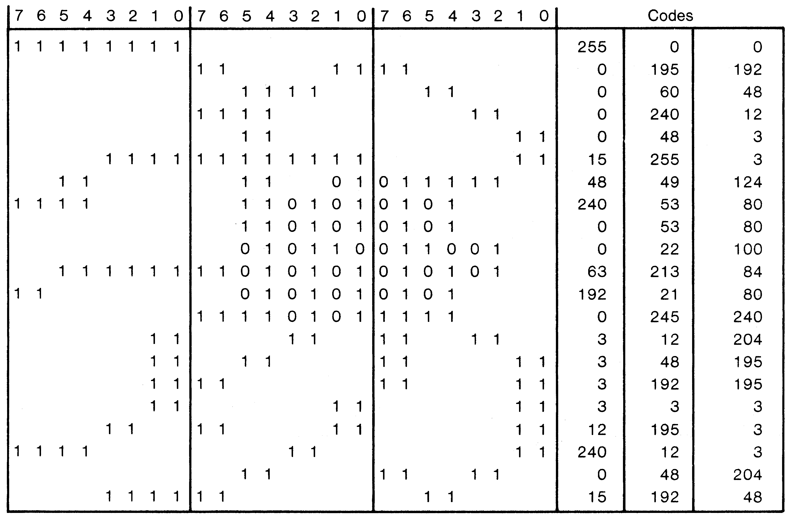
Schritt 3: Die Rechenphase
Damit ist die schöpferische Arbeit zunächst einmal beendet, und wir wenden uns profaner Mathematik zu. Ähnlich wie wir es schon im Rezept zu den eigenen Zeichenmustern getan haben, wandeln wir nun die Muster in einen Zahlencode um. Dazu unterteilen wir das Sprite-Entwurfsblatt durch zwei senkrechte Linien in drei Spalten zu je 8 Kästchen. Diese entsprechen jeweils drei Byte in einer Zeile. Jedem Kreuzchen in Bild 8 (oder jeder 1 in Bild 9) entspricht wieder ein bestimmter Zahlenwert. Zur Hilfe bedienen Sie sich bitte wieder des Bildes 2, wo diese Werte den Bitnummern zugeordnet sind. Alle Werte eines Bytes werden dann addiert (wie beispielsweise in Bild 3 gezeigt). So ergeben sich pro Zeile drei Codes und insgesamt 63 Codezahlen pro Sprite. In den Bildern 8 und 9 sind die sich ergebenden Codes rechts neben dem Entwurfsblatt gezeigt.
Schritt 4: Spritedatenspeicher aussuchen
Genauso wie unser Computer Zeichen nur dann darstellen kann, wenn sie als Muster (das sind ja die Codes) im Speicher zu finden sind, braucht er auch das Spritemuster im Speicher. Wo wir die 63 Byte eines Spritemusters plazieren, diese Überlegung ist nun unser nächster Schritt. Zwei Regeln gilt es zu beachten bei der Auswahl von Speicherplätzen zu diesem Zweck:
1) Der Spritespeicher muß im gleichen 16 KByte-Bereich liegen wie der Bildschirm. Das ist im Normalfall dann der Speicherraum von 0 bis 16383.
2) Die Startadresse der Spritedaten muß glatt durch 64 teilbar sein. Daneben sollte man natürlich darauf achten, daß man die Daten nicht in Speicherbereiche packt, die das Betriebssystem oder der Basic-Interpreter braucht. Kritisch sind da vor allem die ersten 1023 Speicherplätze. Gleichwohl bieten sich hier vier Orte an für vier Sprites:
| 704 - 767 | 1. Sprite |
| 832 - 895 | 2. Sprite |
| 896 - 959 | 3. Sprite |
| 960 - 1023 | 4. Sprite |
Die drei letzten davon gehören teilweise zum Kassettenpuffer. Falls Sie also während eines Spriteprogrammes auf die Kassette zugreifen müssen, dann ist es nötig, daß Sie danach die Spritedaten wieder in diesen Puffer zurückschreiben. Wenn Sie mehr als vier Sprites benötigen (habe ich Ihnen schon erzählt, daß Sie bis zu 8 davon gleichzeitig auf dem Bildschirm zeigen können?), dann läßt es sich wohl nicht umgehen, auch den Basic-Speicher dafür zu benutzen, der bei 2048 beginnt. Ich verwende in solchen Fällen meistens den Raum am oberen Ende des 16 KByte-Abschnittes, also knapp unter 16383. Eine andere – aber auch etwas umständlichere – Methode ist es, den Basic-Start höher zu legen. In dem Fall können dann die Spritemuster an den Bildschirmspeicher anschließen. Wir wollen uns aber in dieser kleinen Einführung nicht mit diesen Details belasten, sondern gehen einfach davon aus, daß wir mit nur zwei Sprites arbeiten, die wir nach 704 (für das einfarbige Sprite) und 832 (für das bunte Sprite) legen.
Schritt 5: Spritedaten einlesen
Nun beginnen wir zu programmieren. Wir legen die Spritedaten in DATA-Zeilen (und zwar jeweils 63 Zahlen plus eine 0, also 64 Zahlen). Im Programm SPRITES sind das dann die Zeilen ab 620. Außerdem brauchen wir zwei Einleseschleifen:
70 FOR I = 704 TO 767:READ A:POKE I,A:NEXT I
80 FOR I = 832 TO 895:READ A:POKE I,A:NEXT I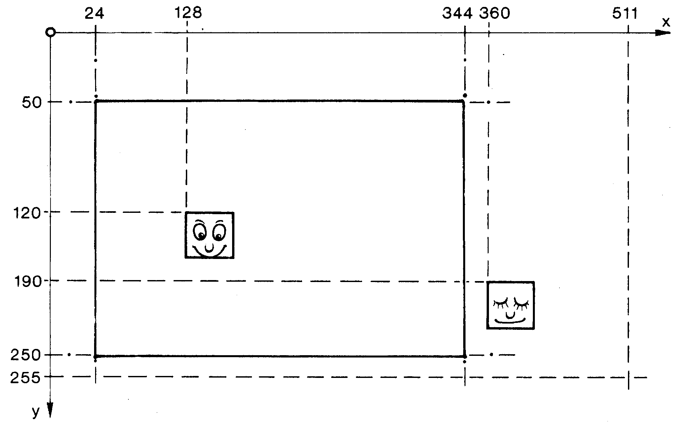
Damit hätten wir den aufwendigsten Teil der Sprite-Programmierung hinter uns.
Schritt 6: Wo liegen die Daten?
Dem Computer muß nun mitgeteilt werden, wo er die Spritemuster finden kann. Dazu gibt es direkt oberhalb des Bildschirmspeichers acht Adressen (ab 2040), in die eine Kennzahl der Spritedaten-Startadresse gepackt wird. Die Zuordnung zu einer solchen Speicherstelle legt gleichzeitig auch die Spritenummer fest. So zeigt die Kennzahl in 2040 automatisch immer auf das Sprite mit der Nummer 0, die in 2041 auf Sprite 1 und so weiter. Die Kennzahl ergibt sich aus der Startadresse des Spritemusters, dividiert durch 64: Kennzahl = Startadresse / 64
Für unser einfarbiges Sprite wählen wir die Nummer 0 und schreiben nach 2040 nun 704/64 = 11. Für das andere Sprite wählen wir die Nummer 1 und für die Kennzahl gilt hier 832/64 = 13. Im folgenden soll immer N diese Spritenummer sein. Im Programm Sprites (Listing 4) findet diese Festlegung in Zeile 100 statt:
Für jedes Sprite, das in eine Kollision verwickelt wurde, ist dort dann ein Bit auf 1 gesetzt. Wenn also beispielsweise das Sprite 0 mit Bildschirmzeichen zusammenstößt, dann findet man in Register 53279 den Wert 1. Die Berechnung des zu erwartenden Wertes kann wieder mittels der Bitwerttabelle in Bild 2 geschehen. Sind mehrere Sprites in eine Kollision verwickelt, addiert man die Bitwerte. Das Auslesen dieser Register geschieht einfach durch PEEK. Allerdings ist dieses Auslesen so gründlich, daß ein weiteres PEEK dort nichts mehr finden würde, denn durch den PEEK-Befehl wird der Inhalt der beiden Kollisionsregister gelöscht. Braucht man diesen Inhalt aber noch – beispielsweise für eine Untersuchung, welche Sprites zusammengestoßen sind –, dann muß man den Registerinhalt beim Auslesen gleich in eine Variable packen. Man schreibt dann beispielsweise A = PEEK(53278) und kann dann A weiterverarbeiten. Im Programm SPRITES wird diese Radikalkur verwendet, um das fragliche Register (hier ist es 53278, weil wir an der Sprite/Sprite-Kollision interessiert sind) zu löschen. Zeile 260 dient dazu:
260 A = PEEK(53278)Uns interessiert weiterhin gar nicht, welche Sprites zusammenstoßen – wir haben ja nur die beiden – Sprite 0 und 1. Deshalb untersuchen wir in Zeile 370 lediglich, ob im Register 53278 überhaupt ein Wert, der von Null verschieden ist, auftaucht:
370 IF PEEK(53278) THEN 400Falls Ihnen diese Schreibweise etwas ungewöhnlich vorkommt, dann lassen Sie sich sagen, daß damit das gleiche erreicht wird wie durch eine Abfrage IF PEEK(53278) < > 0 THEN... . Ist dann ein Zusammenstoß erfolgt, passiert durch die Zeile 370 zweierlei: Erstens befindet sich im Register 53278 dann der Wert 3, der ja von Null verschieden ist und zur Verzweigung des Programmes nach Zeile 400 führt. Zum anderen aber wird durch das PEEKen dieses Register gleich wieder gelöscht und steht bereit für weitere Kollisionsabfragen. Sind Sie etwas abergläubisch und irritiert es Sie, daß wir genau 13 Schritte zu machen hatten, um alle Spritemöglichkeiten auszuschöpfen? Dann glauben Sie sicherlich auch an die Sage vom geheimnisvollen Fliegenden Holländer, der einige Jahrhunderte die Seeleute aller Nationen in Angst und Schrecken versetzte, weil mit seinem Auftauchen immer ein Unglück verbunden war. Eigentlich war ja der Fliegende Holländer dazu verdammt, bis in alle Ewigkeit ruhelos über die Weltmeere zu segeln. Merkwürdigerweise findet man aber schon seit einigen Jahrzehnten keinerlei Bericht mehr – obwohl mit unseren hervorragenden Kommunikationsmitteln jedermann schnell davon erfahren würde – über ein Auftauchen dieses Unglücksschiffes! Woran liegt das? Dieses Rätsel kann nun erstmalig unser Beispielprogramm »Sprites« (Listing 4) lösen: Ich will Ihnen noch nicht zuviel verraten. Die Kommentare im Programm und unsere 13 Schritte erklären das Programm ausreichend. Im Grunde genommen finden sich nur noch ein paar Ergänzungen, die aus Texten, einem Programmteil für den Hintergrund, einer Reaktion auf den Zusammenstoß der beiden Sprites und einer Schleife zur Bewegung von Sprites bestehen. Bei der Bewegung werden in jedem Schleifendurchlauf die X- und die Y-Koordinaten der beiden Sprites um einen bestimmten Betrag verändert und die neuen Werte in die Register für die Sprite-Orte geschrieben. Viel Spaß bei dieser Lösung des Rätsels, die eines unserer Hauptgerichte ist. Sehen wir uns nun ein weiteres Rezept für ein Hauptgericht an.
Hochauflösende Grafik
Wir haben nun schon einige Male erlebt – und zwar beim veränderten Zeichensatz und auch bei den Sprites -, daß einzelne gesetzte Bits einen leuchtenden Bildpunkt auf dem Bildschirm erzeugen und gelöschte Bits die Hintergrundfarbe bestehen lassen. Wie allerdings der VIC-II-Chip unsere Erzeugnisse auf den Bildschirm bringt, nämlich als 8 mal 8-Bit-Feld auf einmal bei den Zeichen oder als 24 mal 21-Bit-Feld bei den Sprites, darauf haben wir bisher nur geringen Einfluß ausüben können. Dabei braucht man nur einen kleinen Gedankensprung weiter zu gehen: Was wäre, wenn wir anstelle der eben erwähnten kompletten Bitmuster (8 mal 8 oder 24 mal 21) dafür sorgen könnten, daß nur einzelne Bits des Bildschirmes an- oder ausgeschaltet werden? Dann hätten wir 320 Bildschirmpositionen (nämlich 40 Spalten zu je 8 Bits) in der Waagerechten und 200 (das sind 25 Zeilen mit je 8 Positionen) in der Senkrechten zur Verfügung, könnten also insgesamt 64000 verschiedenen Bildpunkte steuern! Tatsächlich gibt es einen Betriebszustand des VIC-II-Chip, den sogenannten Bit-Map-Modus, der diese Steuerung erlaubt. Es ist wahrhaft ein Jammer, daß das Basic des C 64 die darin liegenden Möglichkeiten nicht im geringsten unterstützt. Wieder müssen wir uns in ein Gewirr von POKE- und PEEK-Befehlen stürzen, wobei im Bit-Map-Modus auch noch eine große Portion Geduld vom Benutzer erwartet wird, solange er in der Sprache Basic arbeitet. Allerdings lohnt das Ergebnis die Geduld. »Map« kann man ins Deutsche als »Landkarte« übersetzen. Allerdings hinkt diese Entsprechung etwas, denn eine Landkarte versucht die Gegend auf dem Papier abzubilden, hier bei der Bit-Map aber ist es umgekehrt: Der Inhalt der Bit-Map wird auf dem Bildschirm gezeigt. Es handelt sich um einen 8000 Byte großen Speicherbereich, der für jeden Bildschirmpunkt von den 64000 möglichen ein Bit enthält (8000 Byte zu je 8 Bits = 64000 Bits). Ist dieses Bit auf 1 gesetzt, dann bildet es der VIC-II-Chip an einer bestimmten Position des Bildschirmes als leuchtenden Punkt ab. Die Aufgabe, Grafik zu programmieren, besteht also darin, innerhalb dieses Speicherbereiches die richtigen Bits auf 1 oder 0 zu setzen. Dazu kommen wir gleich noch. Nun also zum Rezept: Damit Sie die einzelnen Schritte auch gleich in der Anwendung sehen, ist hierzu noch ein kleines Programm »HiRes-Grafik« (Listing 5) abgedruckt:
Schritt 1: Bit-Map-Modus einschalten
Das Register 53265 (genauer gesagt, das Bit 5 davon) ist zuständig für diesen Bit-Map-Modus. Man schaltet ihn ein durch:
POKE 53265,PEEK(53265) OR 32und in den normalen Textmodus gelangt man durch:
POKE 53265,PEEK(53265) AND (255-32)In unserem Programm »HiRes-Grafik« geschieht dieses Einschalten in Zeile 120. Probehalber können Sie den Einschaltbefehl auch mal im Direktmodus eingeben. Der sich dadurch ergebende Bildschirm ist recht interessant: Man kann nämlich dem Computer direkt bei der Arbeit zusehen, weil wir auf dem Bildschirm den Speicherbereich von 0 bis 999 abgebildet sehen. Dort befindet sich beispielsweise die sogenannte Zeropage, ein Arbeitsspeicher des Betriebssystems, in dem sich dauernd Inhalte verändern.
Schritt 2: Welche Bit-Map?
Stellen Sie sich vor, die auf die eben erwähnte Weise gewählte Bit-Map soll nun beschrieben werden. Das könnte ja dazu führen, daß Inhalte der Zeropage verändert werden müssen. Unser Computer ist in dieser Angelegenheit aber sehr eigen: Wenn man nicht sehr darauf achtet, wohin man was schreibt in diesem empfindlichen Speicherbereich, dann stürzt er ab. Es muß also noch eine Möglichkeit geben, einen anderen Ort für die Bit-Map anzugeben. Tatsächlich ist das der Fall und auf diese Weise packen wir die Bit-Map in einen Speicherbereich, in dem sie auch in den meisten Grafikprogrammen zu finden ist:
POKE 53272,PEEK(53272) OR 8legt unsere Bit-Map-Startadresse nach 8192. Übrigens gibt es – wie Sie sich sicher denken können – noch mehrere Möglichkeiten, im Speicher unseres Computers solche Bit-Maps unterzubringen. Allerdings wird das etwas komplizierter als das hier gezeigte Verfahren, weshalb ich Sie da wieder auf die eingangs erwähnte Literatur verweisen möchte. Zeile 140 dient im Programm »HiRes-Grafik« zur Festlegung des Bit-Map-Ortes. Bevor wir uns den weiteren Programmverlauf ansehen – und damit die nächsten Schritte – soll noch der Aufbau der Bit-Map, wie er für uns auf dem Bildschirm existiert, anhand des Bildes 11 erklärt werden: Unser Bildschirm ist im Bit-Map-Modus praktisch wie ein Koordinatensystem aufgebaut, dessen Nullpunkt oben links liegt und dessen X-Werte von 0 bis 319 reichen, wohingegen die Y-Werte von oben (ab Null) nach unten verlaufen bis 199. Das ist ein etwas ungewöhnliches Koordinatensystem, mit dem sich aber auch allerhand anstellen läßt.
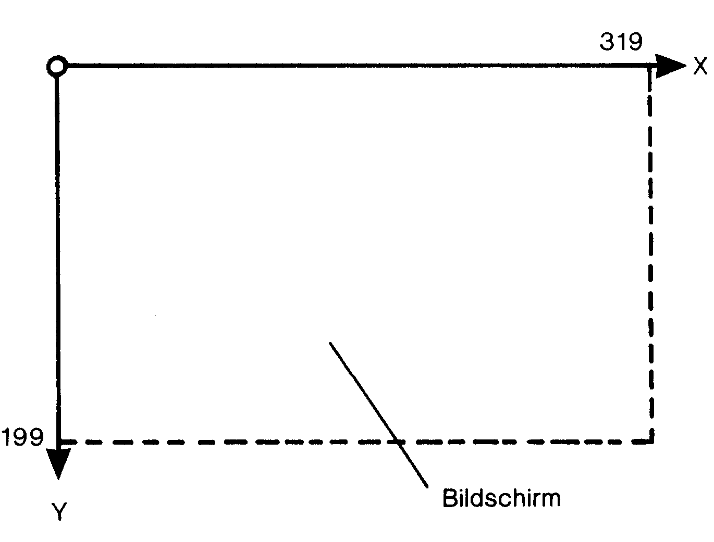
Schritt 3: Bit-Map schützen
Die mit diesen beiden POKE-Befehlen in die VIC-II-Chip-Register erzeugte Bit-Map liegt mitten im Basic-Speicherraum (der beginnt ja bei 2048 und reicht bis 40960). Ähnlich wie bei der Erzeugung eigener Zeichen besteht auch hier die Gefahr, daß ein Basic-Programmtext oder Variable über 8192 hinausreichen. Dadurch würde aber die Bit-Map beeinflußt. Das kann man verhindern, indem man mittels zweier POKE-Befehle den Basic-Speicher begrenzt:
POKE 52,32:POKE 56,32Damit hört der Basic-Speicher bei 8192 auf. Soll er wieder die normale Länge annehmen, dann gibt man ein:
POKE 52,160:POKE 56,160Unser Programm vollführt diesen Schutz der Bit-Map in Zeile 50. Wenn Sie alles bisher vorgestellte eingegeben und durch RUN gestartet haben, dann sieht der Bildschirm sehr merkwürdig aus. Es zeigen sich mehr oder weniger zufällige Speicherinhalte als Punkte.
Schritt 4: Bit-Map säubern
Von diesen zufällig dort vorhandenen Inhalten müssen wir die Bit-Map natürlich reinigen, bevor wir sie ernsthaft für Zeichnungen benutzen. Das geschieht einfach durch eine Programmschleife, in der in jede Speicherzelle der Bit-Map eine Null geschrieben wird:
160 B = 8192
170 FOR I=0 TO 7999
180 :POKE B+I,0
190 NEXTSo sieht das dann auch im Beispielsprogramm »HiRes-Grafik« aus. Allerdings muß ich Sie noch warnen: das dauert eine ganze Weile! Hinterher ist der Bildschirm schwarz – jedenfalls im Programm. Wenn Sie alles bis hierher eingegeben und dann durch RUN gestartet haben, werden Sie meistens noch bunte Felder auf dem Bildschirm finden. Das hängt mit der besonderen Art der Farbgebung im Bit-Map-Modus zusammen, die wir uns nun ansehen werden.
Schritt 5: Es wird farbig
Anders als im Textmodus holt der VIC-II-Chip die Vorder- und die Hintergrundfarbe im Bit-Map-Modus aus dem Speicher, der bisher als Bildschirmspeicher gedient hat: aus dem Bereich 1024 bis 2023 also. Das gilt übrigens nur dann, wenn man den Bildschirm an der alten Stelle beläßt, so wie wir das hier tun. Es gibt aber auch Möglichkeiten, den Bildschirmspeicher zu verschieben. In dem Fall dient immer der aktuelle Bildschirmspeicher der Farbgebung. Das aber nur nebenbei. Jeder Bildschirmspeicherplatz (also beispielsweise die Speicherstelle 1024) ist zuständig für die Vorder- und die Hintergrundfarbe eines 8 mal 8-Bit-Bereiches der Abbildung (die eben erwähnte Speicherstelle liefert also die Farben für das Bildschirmquadrat, dessen linke obere Ecke die Koordinaten 0,0 und dessen rechte untere die Koordinaten 7,7 hat). Damit zwei Farbinformationen in einem Byte des Bildschirmspeichers Platz haben, bedient sich der Computer des sogenannten »gepackten« Formates. Das ist für uns einfach eine Kennzahl F, die sich aus der Vordergrundfarbe ZF und der Hintergrundfarbe HF durch folgende Formel berechnet:
F = 16*ZF + HF
Der Programmteil zwischen Zeile 60 und 90 fragt Sie nach der gewünschten Farbkombination und berechnet die Kennzahl F. Wir belegen nun den gesamten Bildschirmspeicher in einer Schleife mit dieser Kennzahl. Dadurch werden auch die eventuell vorhandenen bunten Felder – die sich aus zufälligen Inhalten des Bildschirmspeichers ergeben – überdeckt durch die gewählte Hintergrundfarbe:
210 C = 1024
220 FOR I=0 TO 999
230 :POKE C+I,F
240 NEXTAuch dieser Teil unseres Programmes verlangt nochmal etwas Geduld von Ihnen. Damit hätten wir alle Vorbereitungen abgeschlossen. Falls Sie bis hierher alles abgetippt und mittels RUN gestartet haben, dann sehen Sie nun einen leeren sauberen Bildschirm vor sich, der in der Hintergrundfarbe erstrahlt. Nun können wir Punkte setzen. Aber wie macht man das?
Schritt 6: Punkte setzen
Einen Punkt auf dem Bildschirm sichtbar zu machen, erfordert – das hatten wir schon zu Beginn dieses Rezeptes erwähnt – das Setzen des richtigen Bits im richtigen Byte. Wir müssen also in den Bit-Map-Speicher etwas hineinschreiben. Probieren Sie doch einfach mal:
POKE 9000,255Sie sehen plötzlich irgendwo im oberen Teil des Bildschirmes einen kleinen horizontalen Strich. Aber das ist es ja eigentlich nicht das, was wir brauchen. Wir wollen vielmehr ganz gezielt Punkte setzen können. Was tut man, um beispielsweise genau den Punkt anzuschalten, der einen X-Wert von 200 und einen Y-Wert von 50 sein eigen nennt (siehe Bild 12)? Das ist leider wegen des ziemlich komplizierten Speicheraufbaues der Bit-Map ein relativ komplizierter Weg. Wieder muß ich Sie da auf die Literatur verweisen. Wir brauchen uns hier nur einige Formeln zu merken. X und Y sind die Koordinaten des zu setzenden Punktes, BY ist ein Zwischenwert (der die Nummer des Bytes in der Bit-Map bezeichnet) und BI ebenfalls ein Zwischenwert, der die Nummer des Bit im Byte enthält. Die letzte Zeile sorgt dann für das Setzen des richtigen Bits in der Bit-Map:
280 BY = (X AND 504) + 40*(Y AND 248) + (Y AND 7)
290 BI = 7 - (X AND 7)
300 POKE B + BY,PEEK(B+BY) OR (2↑BI)B ist übrigens im Programm (daraus stammen diese Zeilen) vorher schon auf 8192 festgelegt worden. Diese drei Zeilen lassen sich auch gut als Unterprogramm einsetzen.
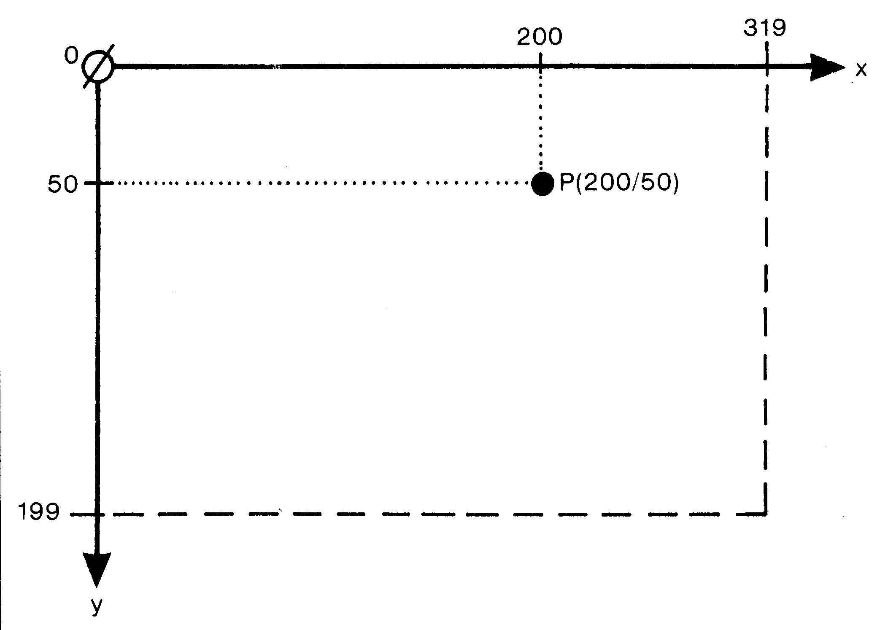
Das war's eigentlich schon. Alles weitere im Programm »HiRes-Grafik« dient dazu, festzulegen, welche Punkte zu setzen sind.
Die Programmzeilen 260, 270 und 310 steuern eine Schleife, in der X von 0 bis 319 läuft.
In Zeile 270 wird mittels der Funktion A(X) der aktuelle Y-Wert berechnet. Das Programm zeichnet eine Sinusfunktion. Die Funktionsdefinition in Zeile 30 sieht allerdings etwas merkwürdig aus. Das rührt daher, daß wir solch ein ungewöhnliches Koordinatensystem zur Verfügung haben. Wenn Sie das Programm gestartet haben, werden Sie aufgefordert, die Vorder- und die Hintergrundfarbe einzugeben. Danach wird einige Geduld von Ihnen erwartet, bis schließlich die Sinuskurve auf dem Bildschirm erscheint. Das Programm wartet nun auf einen Tastendruck, um dann den normalen Textmodus wieder herzustellen. Dies also war wieder ein Hauptgericht. Kommen wir nun noch zur Nachspeise.
Es kommt natürlich immer darauf an, was Sie zeichnen wollen: Für die grafische Darstellung mathematischer Funktionen ist es durchaus vorteilhaft, nur eine Zeichenfarbe zu verwenden. Für künstlerische Zwecke allerdings wären mehrere Farben erwünscht. Wie schon bei den Zeichen und den Sprites, gibt es natürlich auch im Bit-Map-Modus die Möglichkeit, vier Farben auf dem Bildschirm zu zeigen. Wieder werden nicht mehr einzelne Bits, sondern Bitpaare vom VIC-II-Chip interpretiert. Einen gravierenden Nachteil hat dieser Mehrfarben-Bit-Map-Modus allerdings:
In der Horizontalen stehen uns nun nicht mehr 320, sondern nur noch 160 Bildschirmpositionen zur Verfügung. Das schränkt die Anwendung dieses Modus gewaltig ein. Sehen wir uns die Zuordnung der Bitpaare zu den Farbquellen an (siehe Bild 13): Die Kombination 00 steht wieder für die Hintergrundfarbe. Der VIC-II-Chip holt sich den dazugehörigen Farbcode aus der Speicherstelle 53281. 01 und 10 vereinigen sich, wie zuvor im normalen hochauflösenden Modus die Vorder- und die Hintergrundfarbe, zu einem gepackten Format. Das befindet sich dann im Bildschirmspeicher. Ist F1 der Code für die Farbe, die zur Bitpaarung 01 gehört und F2 der für das Paar 10, dann berechnet sich die Kennzahl für beide aus der Formel:
F = 16*F1 + F2
| BIT-PAAR | FARBQUELLE | |
|---|---|---|
| 00 | SPEICHER 53281, HINTERGRUNDREG. Nr. 0 | |
| 01 | BITS 4-7 | DES VIDEO-RAM |
| 10 | BITS 0-3 | |
| 11 | BILDSCHIRMFARBSPEICHER | |
Die Farbe der Bitkombination 11 schließlich stammt aus dem auch im Textmodus verwendeten Bildschirmfarbspeicher (55296 bis 56295). Drei Bereiche sind es, die im Vergleich zum normalen Bit-Map-Modus hier verändert werden müssen: Zum einen muß dem VIC-II-Chip gesagt werden, daß er nun die Bit-Map in Bitpaaren interpretieren soll. Zum zweiten müssen wir für die Belegung der verschiedenen Farbquellen Sorge tragen, und zum dritten verändert sich die Routine, die für uns aus den Koordinaten eines Punktes die richtige Stelle in der Bit-Map berechnet und dann dort Bits an- oder abschaltet. Das beigefügte Programm »Multigrafik« (Listing 6) soll Ihnen diese Unterschiede zeigen: Einschalten des Mehrfarben-Bit-Map-Modus: Daß er die Bits aus der Bit-Map nun paarweise interpretieren soll, erfährt der VIC-II-Chip durch das Register 53270. Dort schaltet man diesen Mehrfarben-Bit-Map-Modus ein durch:
144 POKE 53270,PEEK(53270) OR 16Das Ausschalten geschieht im Programm in Zeile 342:
342 POKE 53270,PEEK(53270) AND (255-16)Belegen der Farbregister: In den Programmzeilen 60 bis 90 ist die Abfrage auf die gewünschten Farben ergänzt worden ebenso wie die Berechnung der Farbkennzahl F. Die Farbgebung zwischen den Zeilen 200 und 242 wurde erweitert. Dazu wird in Zeile 210 der Variablen D die Startadresse 55296 des Bildschirmfarbspeichers übergeben. Die anschließende Schleife belegt dann nicht nur den Bildschirm-, sondern auch den Bildschirmfarbspeicher, letzteren mit der Farbe F3. In 242 wandert noch die Hintergrundfarbe F0 ins Register 53281.
Punkte zeichnen: Aus der einen Schleife, in der X von 0 bis 319 lief und die auch gleich die Berechnung der Bitadresse und den POKE-Befehl enthielt, wurden nun drei Schleifen, die jeweils eine etwas veränderte Sinusfunktion mit anderer Farbe auf den Bildschirm zaubern. Vor der Schleife erhält jeweils die Variable PF die gewünschte Farbkennzahl (sie ist hier übrigens identisch mit dem Dezimalwert des entsprechenden Bitpaares, also 11 = 3, das aber nur am Rande bemerkt). Das Berechnen und Zeichnen ist nun in ein Unterprogramm verschoben, welches bei 400 beginnt. Die Formeln in diesem Modus sind natürlich anders als im normalen hochauflösenden Modus. Wer darüber mehr wissen möchte, der sollte sich dazu das Commodore-64-Buch (Band 3) von Schneider und Eberl zu Gemüte führen. Es erscheint im Markt&Technik Verlag unter der Bestellnummer MT595. Das Unterprogramm erwartet beim Einsprung jeweils einen Koordinatenwert f=r X (0 bis 159), für Y (0 bis 199) und eine Farbzahl PF (0 bis 3). Ansonsten funktioniert »Multigrafik« genauso wie »HiRes-Grafik: Nach den Abfragen auf die gewünschten Farben dauert alles noch etwas länger, bis dann nacheinander die drei Kurven erscheinen. Wieder nach einem Tastendruck schaltet der VIC-II-Chip in den normalen Textmodus zurück.
Damit ist unsere Rezeptsammlung abgeschlossen. Natürlich bietet sie lediglich eine grundlegende Einführung in die Grafik-Kochkunst. Falls Ihnen das so gekochte Menü geschmeckt hat, dann wagen Sie sich doch mal an die raffinierteren Gerichte. Da gibt es beispielsweise im 64'er-Magazin einen Kurs »Grafik-Streifzüge« und natürlich die anfangs aufgezählte Literatur.
(Heimo Ponnath/cg)